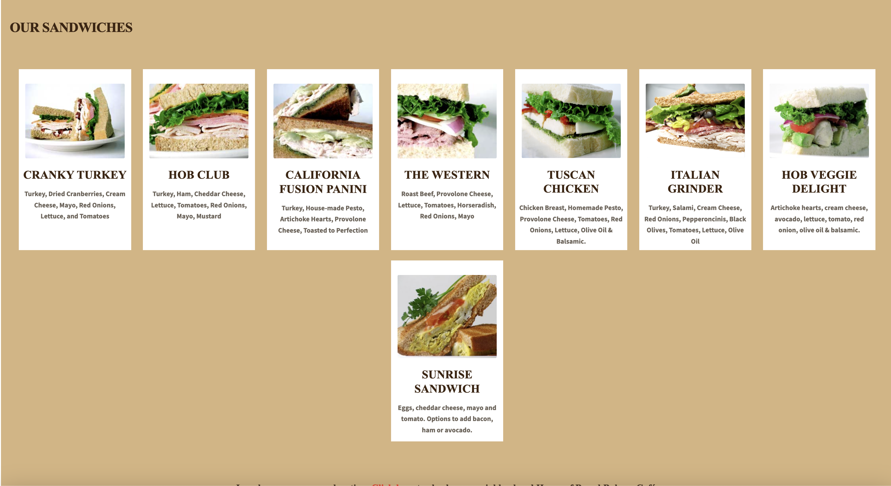
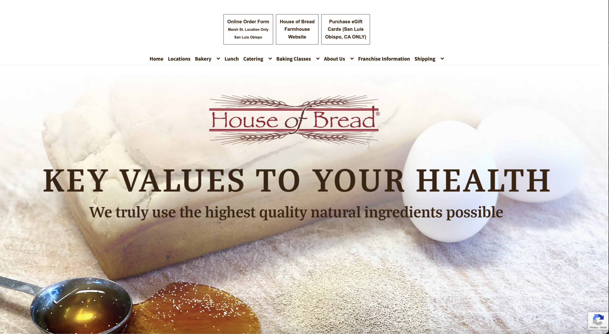
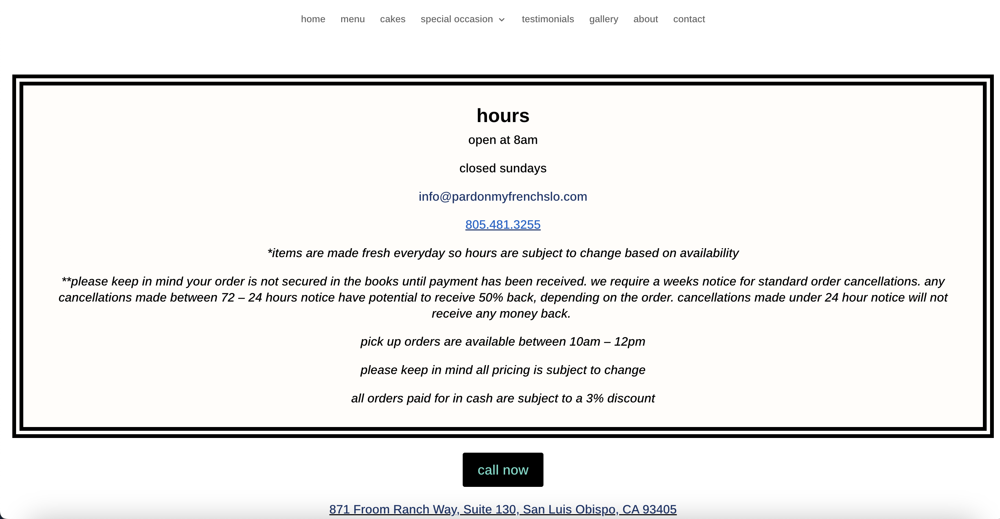
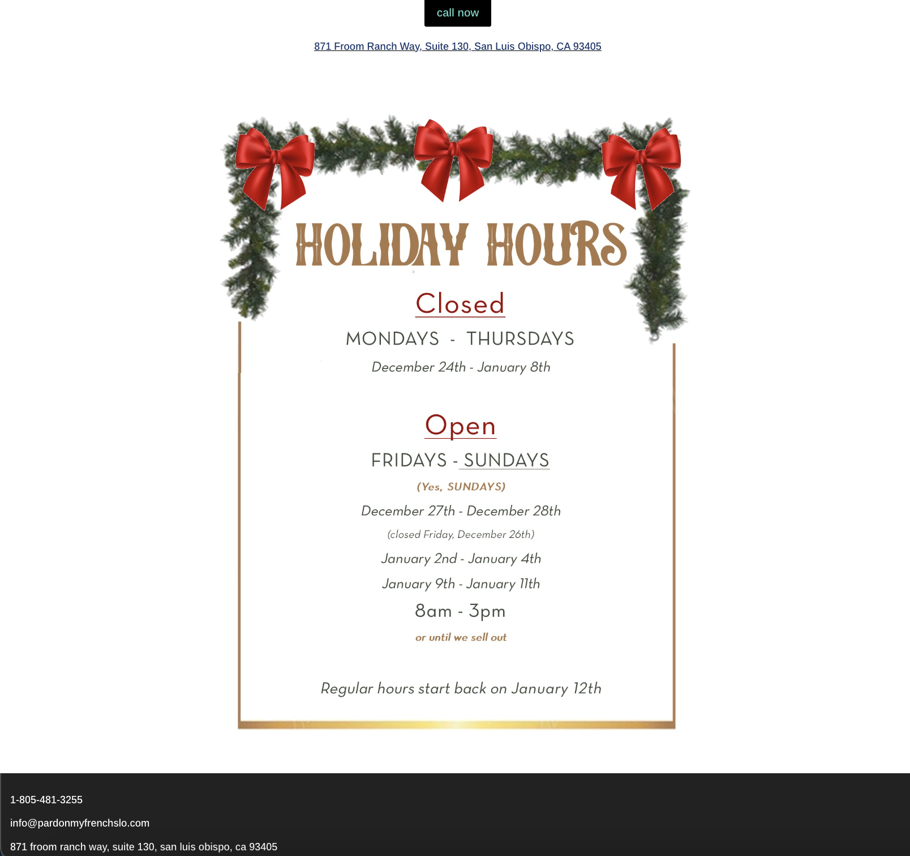
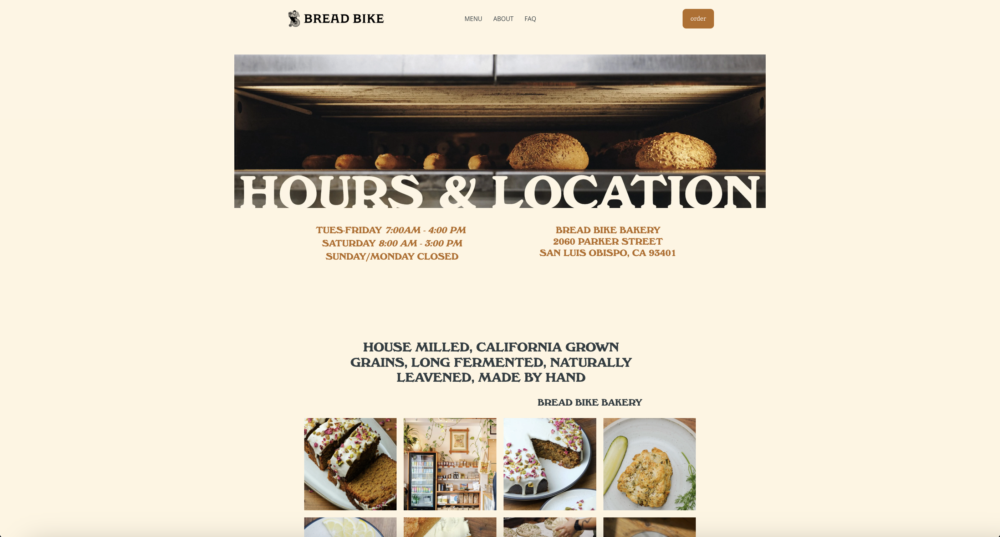
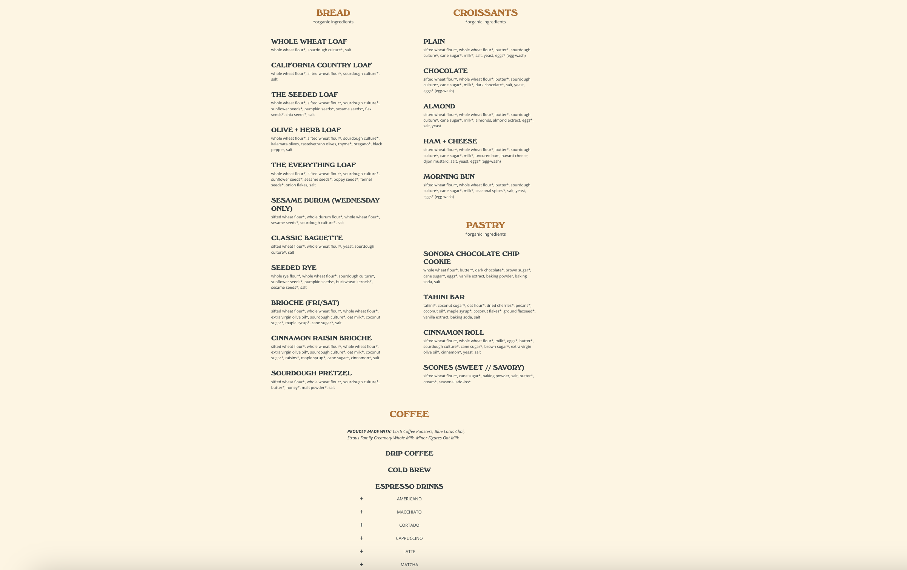

Bella's Baked Goods
Bella's Baked Goods is a bakery that offers various homemade baked goods for purchase. Some of these products include pastries, breads, treats, and coffee!
People who are hunger and want to eat baked goods and coffee are the target consumers.
The goal of the consumers is to be able to navigate the bakery website to order items, view the menu, and view company info.






Bella's Baked Goods, Life's Better with Bella's
Picture of baked goods displayed in a case
Bella's Baked Goods is a small business that makes baked goods: including breads, pastries, sweets, and coffee. Our goal is to share delcious food while providing a cozy environment with the community.
Picture of coffee cup
Number, Email
Picture of bread loaves
Pastries: Plain Croissant $4, Chocolate Croissant $4.25, Socnes $4, Cookies $4; Bread: Bagel Options $5, Loaves of Bread Options $12, Muffins $5, Pumpkin Banana or Lemon Bread Slice $4, Coffee: Esspresso Drinks: Americano $3.25, Mocha $5, Latte $4, Cappuccino $4, Black $3, Added Flavor +$1
Pictures of various bakery items and coffee we sell such as pastries, breads, sweets next to descriptions
906 Lemon Ave, San Luis Obispo 93401, Hours: Mon-Fri 7am-9pm, Saturday 8am-5pm
Picture of ouside front view of bakery